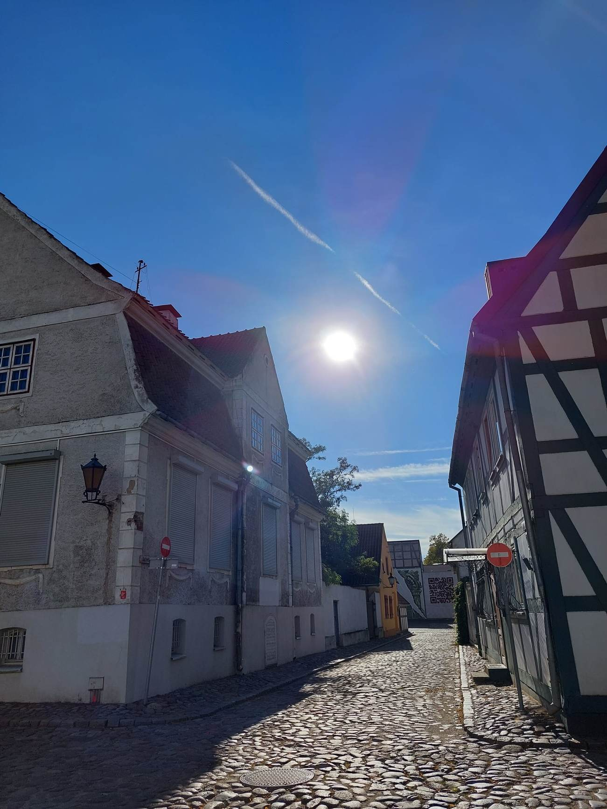
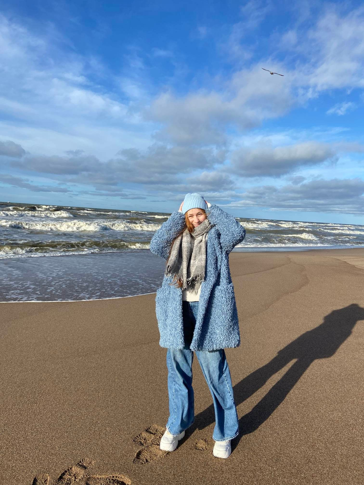
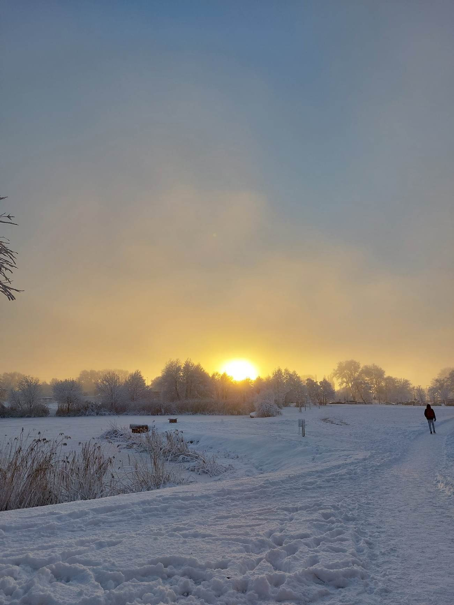
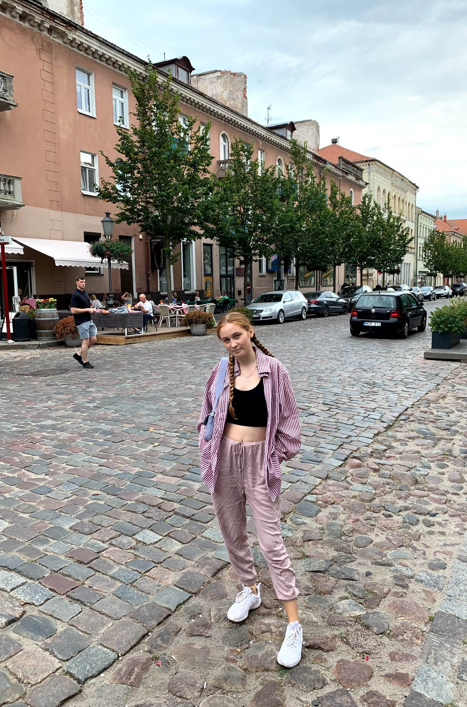

Dasha's Blog: Lithuania
Dasha's Blog: Lithuania



Lituania
I have moved to Lithuania in the age of 17. My university is in Klaipeda, which is 3rd biggest city in Lithuania. Lithuania is located on the Baltic see coast, which gives me opportunity to reach the beach in 15 minutes from the dorms where I lie.
Lithuania used to be under different regimes during its existence including Germany and the USSR, which left its impact on the culture and architecture. Old Town in Klaipeda is a small and very cozy please which where I love to walk between tiny, cute houses, and often grab a drink in local coffee shops.
Summer’s in Lithuania are quite nice, however, winters are gloomy and sad for me. In winter, we had lots of snow, which made this time a bit brighter.
